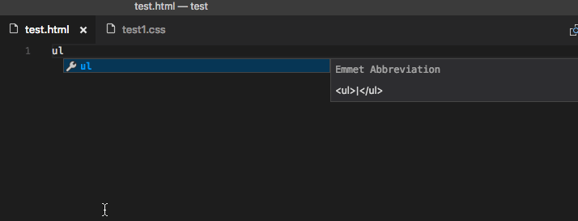

Emmet in Visual Studio Code
Visual Studio Code supports most of the Emmet Actions including expanding Emmet abbreviations and snippets.
In the July 2017 (v1.15) release of VS Code, we introduced Emmet 2.0, which enabled features like Emmet in the suggestions/auto-completion list, and multi-cursor support. Read more on the why's and how's of this major overhaul in the Emmet 2.0 blog post.
How to expand Emmet abbreviations and snippets
Emmet abbreviation and snippet expansions are enabled by
default in html, haml,
jade, slim, jsx,
xml, xsl, css,
scss, sass, less and
stylus files. As well as any language that
inherits from any of the above like
handlebars and php.
When you start typing an Emmet abbreviation, you will see the abbreviation displayed in the suggestion list. If you have the suggestion documentation fly-out open, you will see a preview of the expansion as you type. If you are in a stylesheet file, the expanded abbreviation shows up in the suggestion list sorted among the other CSS suggestions.

Emmet when quickSuggestions are disabled
If you have disabled the editor.quickSuggestions
setting, you won't see suggestions as you type. You can still
trigger suggestions manually by pressing
kb(editor.action.triggerSuggest) and see the
preview.
Disable Emmet in suggestions
If you don't want to see Emmet abbreviations in suggestions at
all, then set emmet.showExpandedAbbreviation to
never and use the command
Emmet: Expand Abbreviation to expand your
abbreviations. You can also bind any keyboard shortcut to the
command id
editor.emmet.action.expandAbbreviation as well.
{
"emmet.showExpandedAbbreviation": "never"
}
Using Tab for Emmet expansions
If you want to use the kbstyle(Tab) key for
expanding the Emmet abbreviations, add the setting
emmet.triggerExpansionOnTab and set it to
true. This setting allows using the
kbstyle(Tab) key for indentation when text is not
an Emmet abbreviation.
{
"emmet.triggerExpansionOnTab": true
}
Emmet suggestion ordering
Emmet suggestions may not always show up at the top of the
suggestion list. This can be either because you have set
editor.snippetSuggestions to top or
if you are on a stylesheet file, it is sorted among other CSS
suggestions. To ensure Emmet suggestions are always on top,
you can set emmet.showSuggestionsAsSnippets to
true and
editor.snippetSuggestions to top.
{
"emmet.showSuggestionsAsSnippets": true,
"editor.snippetSuggestions": "top"
}
Emmet abbreviations in other file types
To enable the Emmet abbreviation expansion in file types where
it is not available by default, use the
emmet.includeLanguages setting. Make sure to use
language ids for both sides of the mapping.
For example:
"emmet.includeLanguages": {
"javascript": "javascriptreact",
"vue-html": "html",
"plaintext": "jade"
}
Emmet has no knowledge of these new languages, and so you
might feel Emmet suggestions showing up in non html/css
context. To avoid this you can set
emmet.showExpandedAbbreviation to
inMarkupAndStylesheetFilesOnly.
Note: If you used
emmet.syntaxProfilespreviously to map new file types, from VS Code 1.15 onwards you should use the settingemmet.includeLanguagesinstead.emmet.syntaxProfilesis meant for customizing the final output only.
Using custom Emmet snippets
Custom Emmet snippets need to be defined in a json file named
snippets.json. The
emmet.extensionsPath setting should have the path
to the directory containing this file.
Below is an example for the contents of this
snippets.json file.
{
"html": {
"snippets": {
"ull": "ul>li[id=${1} class=${2}]*2{ Will work with html, jade, haml and slim }",
"oll": "<ol><li id=${1} class=${2}> Will only work in html </ol>",
"ran": "{ Wrap plain text in curly braces }"
}
},
"css": {
"snippets": {
"cb": "color: black",
"bsd": "border: 1px solid ${1:red}",
"ls": "list-style: ${1}"
}
}
}
Authoring of Custom Snippets in Emmet 2.0 via the
snippets.json file differs from the old way of
doing the same in a few ways:
| Topic | Old Emmet | Emmet 2.0 |
|---|---|---|
| Snippets vs Abbreviations |
Supports both in 2 separate properties called
snippets and abbreviations
|
The 2 have been combined into a single property called snippets. See default html snippets and css snippets |
| CSS snippet names | Can contain : |
Do not use : when defining snippet names.
It is used to separate property name and value when
Emmet tries to fuzzy match the given abbreviation to one
of the snippets.
|
| CSS snippet values | Can end with ; |
Do not add ; at end of snippet value. Emmet
will add the trailing ; based on the file
type (css/less/scss vs sass/stylus) or the emmet
preference set for css.propertyEnd,
sass.propertyEnd,
stylus.propertyEnd
|
| Cursor location |
${cursor} or | can be used
|
Use only textmate syntax like ${1} for tab
stops and cursor locations
|
HTML Emmet snippets
HTML custom snippets are applicable to all other markup
flavors like haml or jade. When
snippet value is an abbreviation and not actual HTML, the
appropriate transformations can be applied to get the right
output as per the language type.
For example, for an unordered list with a list item, if your
snippet value is ul>li, you can use the same
snippet in html, haml,
jade or slim, but if your snippet
value is
<ul><li></li></ul>, then
it will work only in html files.
If you want a snippet for plain text, then surround the text
with the {}.
CSS Emmet snippets
Values for CSS Emmet snippets should be a complete property name and value pair.
CSS custom snippets are applicable to all other stylesheet
flavors like scss, less or
sass. Therefore, don't include a trailing
; at the end of the snippet value. Emmet will add
it as needed based on the whether the language requires it.
Do not use : in the snippet name.
: is used to separate property name and value
when Emmet tries to fuzzy match the abbreviation to one of the
snippets.
Note: After making changes to the
snippets.jsonfile, remember to reload VS Code for it to take effect.
Tab stops and cursors in custom snippets
The syntax for tab stops in custom Emmet snippets follows the Textmate snippets syntax.
-
Use
${1},${2}for tab stops and${1:placeholder}for tab stops with placeholders. -
Previously,
|or${cursor}was used to denote the cursor location in the custom Emmet snippet. This is no longer supported. Use${1}instead.
Emmet configuration
Below are Emmet settings that you can use to customize your Emmet experience in VS Code.
-
emmet.includeLanguagesUse this setting to add mapping between the language of your choice and one of the Emmet supported languages to enable Emmet in the former using the syntax of the latter. Make sure to use language ids for both sides of the mapping.
For example:
json "emmet.includeLanguages": { "javascript": "javascriptreact", "vue-html": "html", "plaintext": "jade" } -
emmet.excludeLanguagesIf there is a language where you do not want to see Emmet expansions, add it in this setting which takes an array of language id strings.
-
emmet.syntaxProfilesSee Emmet Customization of output profile to learn how you can customize the output of your HTML abbreviations.
For example:
json "emmet.syntaxProfiles": { "html": { "attr_quotes": "single" }, "jsx": { "self_closing_tag": true } } -
emmet.variablesCustomize variables used by Emmet snippets.
For example:
json "emmet.variables": { "lang": "de", "charset": "UTF-16" } -
emmet.showExpandedAbbreviationControls the Emmet suggestions that show up in the suggestion/completion list.
Setting Value Description neverNever show Emmet abbreviations in the suggestion list for any language. inMarkupAndStylesheetFilesOnlyShow Emmet suggestions only for languages that are purely markup and stylesheet based ('html', 'pug', 'slim', 'haml', 'xml', 'xsl', 'css', 'scss', 'sass', 'less', 'stylus'). alwaysShow Emmet suggestions in all Emmet supported modes as well as the languages that have a mapping in the emmet.includeLanguagessetting.Note: In the
alwaysmode, the new Emmet implementation is not context aware. For example, if you are editing a JavaScript React file, you will get Emmet suggestions not only when writing markup but also while writing JavaScript. -
emmet.showAbbreviationSuggestionsShows possible emmet abbreviations as suggestions. Its
trueby default.For example, when you type
li, you get suggestions for all emmet snippets starting withlilikelink,link:css,link:faviconetc. This is helpful in learning Emmet snippets that you never knew existed unless you knew the Emmet cheatsheet by heart.Not applicable in stylesheets or when
emmet.showExpandedAbbreviationis set tonever. -
emmet.extensionsPath
Provide the location of the directory that houses the
snippets.json file which in turn has your custom
snippets.
-
emmet.triggerExpansionOnTabSet this to true to enable expanding Emmet abbreviations with
kbstyle(Tab)key. We use this setting to provide the appropriate fallback to provide indentation when there is no abbreviation to expand. -
emmet.showSuggestionsAsSnippetsIf set to
true, then Emmet suggestions will be grouped along with other snippets allowing you to order them as pereditor.snippetSuggestionssetting. Set this totrueandeditor.snippetSuggestionstotop, to ensure that Emmet suggestions always show up on top among other suggestions. -
emmet.preferencesYou can use this setting to customize Emmet as documented in Emmet Preferences. The below customizations are currently supported: -
css.propertyEnd-css.valueSeparator-sass.propertyEnd-sass.valueSeparator-stylus.propertyEnd-stylus.valueSeparator-css.unitAliases-css.intUnit-css.floatUnitIf you want support for any of the other preferences as documented in Emmet Preferences, please log a feature request for the same.
Known issues in Emmet 2.0
Below are some of the upstream issues with Emmet 2.0 that we are working on fixing. Any help in these areas is appreciated.
-
Use of
@-to get numbering in descending order in repeaters is not supported. Issue: emmetio/html-transform#2 -
HTML snippets ending with
+likeselect+andul+from the Emmet cheatsheet are not supported. Issue: emmetio/html-matcher#1